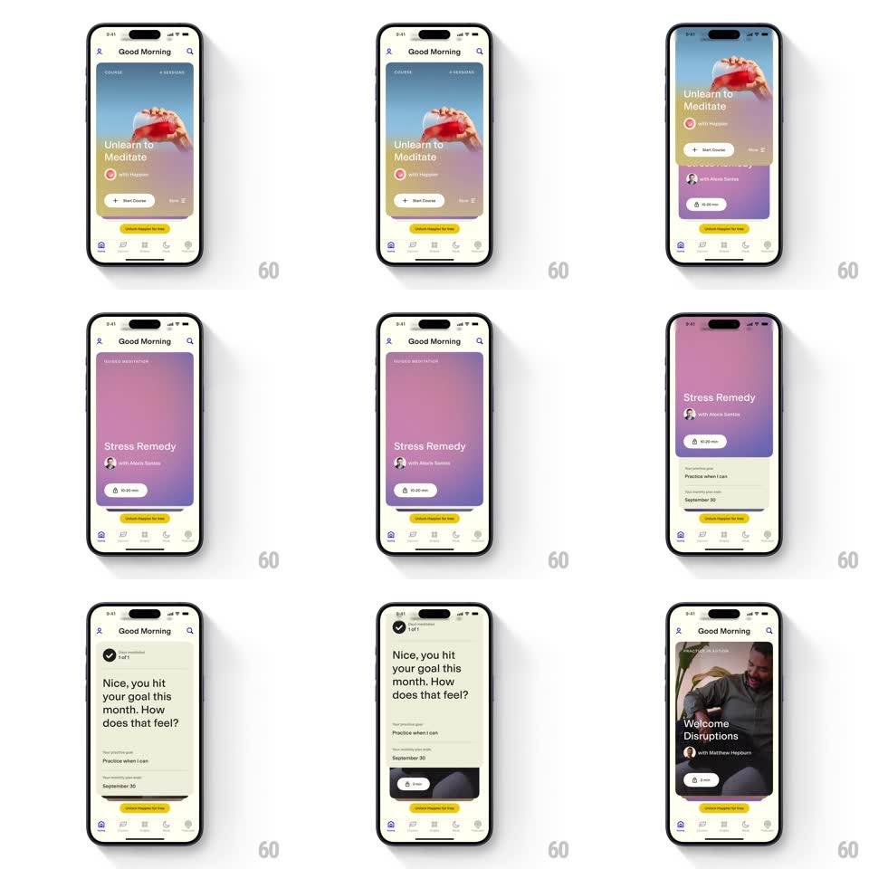

Media
Frame-by-frame

Rebuild this interaction 1:1: Happier's content-card carousel - swipe horizontally between full-bleed media cards (Unlearn to Meditate, Stress Remedy, Welcome Disruptions) with the next card peeking, buttery finger tracking, and a springy snap.

Rebuild this interaction 1:1: Happier's content-card carousel - swipe horizontally between full-bleed media cards (Unlearn to Meditate, Stress Remedy, Welcome Disruptions) with the next card peeking, buttery finger tracking, and a springy snap.
## Integration
Integration: stack-agnostic spec - springs given as stiffness/damping, timed motions as duration + curve; map every value to your framework and animation library of choice.
## Scene
"Good Morning" feed with bottom tab bar. The carousel: tall rounded cards (~80% width) with full-bleed imagery/gradients, title, author, duration pill, and a CTA chip; the next card peeks at the right edge. Below, a text card ("Nice, you hit your goal this month...").
## Motion spec
Pattern: peeking horizontal card carousel.
- Drag: cards track the finger 1:1 with a slight rotation on the moving card (±2deg at drag extremes) and the incoming card scales 0.95 -> 1 as it becomes centered.
- Release: snap to nearest card (spring ~320/26, ~350ms) with velocity carry; fast flicks skip one card max.
- Card content parallaxes: the background image moves at 0.7x card speed during transitions.
- The focused card's CTA chip brightens (opacity 0.9 -> 1, 200ms) on snap; the unfocused card dims slightly (black 8% scrim fades in).
- Below-card content (goal text card) stays fixed - only the carousel strip moves.
## Calibration
- Peek width stays constant (~12% of the next card) at every position.
- Snap is decisive: no resting point between cards.
## Reduced motion
Cards crossfade on swipe; no rotation or parallax.
## Don't miss
- Cards mix media types (photo, gradient, video) - the container motion is identical across all.
- The duration pill and CTA sit on the media with a subtle bottom gradient for legibility.